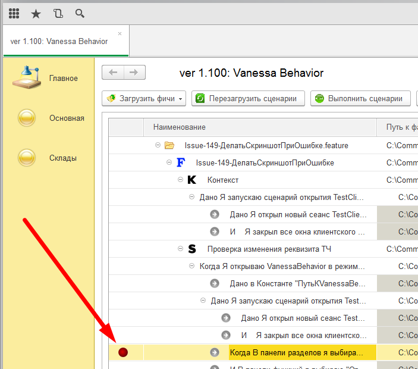

Vanessa-tự Động là một chương trình phát triển trong 1 cách sử dụng các mẫu t phương pháp.
Trang dự án: https://github.com/Pr-Mex/vanessa-automation
Vanessa-tự Động là tương tự như Dưa chuột để phát triển trên nền tảng 1:Enterprise.
Nền tảng hỗ trợ phiên bản:
8.3.6 tương 8.2, 8.3.6, 8.3.7, 8.3.8, 8.3.9, 8.3.10, 8.3.11, 8.3.12, 8.3.13, 8.3.14,
8.3.15, 8.3.16.
Việc điều trị Biểu mẫu được điều khiển (nó được dựa) và Các hình thức thông thường.
Các hình thức thông thường là hỗ trợ giới hạn dạng. Tức là lỗi cố định - mới có được thêm hiếm khi. Nhưng bạn có thể thêm mong muốn của bạn năng mình.
Chủ đề:
1 . Quy tắc để viết năng các tập tin.
1.1 phần Chính của tập tin.
1.1.1 các tiêu đề của các năng
1.1.2 Kịch bản
1.1.3 cấu Trúc của kịch bản
#Тег @tree
#Тег @exportscenarios
1.4 Truyền trong các bước bảng.
1.5 Thách thức của cấu trúc của các kịch bản như một lồng kịch bản.
1.6 Truyền thông số bàn (bàn) trong lồng kịch bản.
2. Làm thế nào để nạp năng tập tin. Tags.
3. Làm thế nào để chạy các năng tập tin để chạy. Gỡ lỗi.
4. Làm thế nào để tạo ra kiểm tra tập tin dựa trên năng tập tin.
5. Mô tả của các thiết lập on the tab Vụ.
* Mở năng trong các biên tập văn bản
6. Không đồng bộ cuộc gọi
7. Theo báo cáo, Quyến rũ, jUnit, Cucmber báo cáo.
8. Các hồ sơ của các hoạt động của người dùng.
9. Làm thế nào để có được nhà nước của các hình thức TestClient.
10. Làm thế nào để kết nối của thư viện.
11. Làm thế nào để chia sẻ bước của bạn với bạn đồng nghiệp cho nhóm phát triển.
12. Hoạt động cơ bản khi làm việc với TestClient.
12.1 Làm thế nào để so sánh một bàn, tài liệu tham khảo.
13. Làm thế nào để tạo ra avtoinstruktory trong đời, định dạng, MARYLAND.
14. Làm thế nào để tạo ra autovideosink.
15. Làm thế nào để tìm hiểu chi tiết lỗi.
16. Kịch bản trong ngôn ngữ khác.
17. Danh sách các thủ tục xuất và các chức năng.
18. Khởi động của Vanessa-tự Động trên CI.
19. Hướng dẫn sử dụng cho người đóng góp.
20. SikuliX.
20.1 Cài Đặt SikuliX
20.2 SikuliX сервер
21. Làm việc với biến toàn cầu.
1 . Quy tắc để viết năng các tập tin.
1.1 phần Chính của tập tin.
Các Năng tập tin cần phải được viết trong ngôn ngữ Gherkin.
Các Năng tập tin có hai phần chính - một tiêu đề năng và kịch bản của nó.
Tiêu đề.
Các tiêu đề có dịch vụ chứa một phần chỉ Thị cho biết ngôn ngữ (tiếng nga, tiếng anh, etc.) tính năng.

Hơn nữa, các tiêu đề thường là loại áp dụng cho tất cả các đặc điểm (có nhiều loại có liên quan đến cụ thể của bạn kịch bản).

Tiếp theo là phần mà từ khóa là sử dụng Chức năng hay Chức năng và các tiêu đề có.

Tiếp đến là một phần trong đó một thời gian ngắn, ba câu trả lời câu hỏi: ai muốn những gì ông muốn, và tại sao điều này là cần thiết (sử dụng kinh doanh).

Tiếp theo là một phần tùy chọn Bối cảnh. Nó thường mô tả những bước chuẩn bị hành hình của kịch bản, nhưng trực tiếp không áp dụng cho anh.
Ở một trong những tập tin có thể được nhiều kịch bản và phần Bối cảnh sẽ được thực hiện trước khi mỗi kịch bản.

Tiếp theo là phần mà có thể đơn giản kịch bản hoặc kịch bản của một dạng đặc biệt, mà dịch nga "Scenario Outline" gọi là "Kịch bản cấu trúc".
Kịch bản.
Một kịch bản phổ biến bắt đầu với từ "Kịch bản:"tiếp theo là tên kịch bản.

Tiếp theo các bước. Mỗi bước nên bắt đầu với chính những lời như thế Này, Khi, Sau đó, Và, Sau đó etc.
Danh sách đầy đủ của từ khoá cho mỗi ngôn ngữ có thể được tìm thấy ở đây: https://github.com/cucumber/gherkin/blob/master/gherkin-languages.json#L2372
Giới hạn số lượng từ khóa bước.

Bước có thể có các thông số của các loại nguyên thủy - số, chuỗi ngày.
Số được viết như là.

Ngày có thể được xác định trong hai định dạng

Dây phải được bao bọc trong hai nháy hay dấu nháy.

Cho dây, các quy tắc của thoát.
\' - означает апостроф
\" - означает кавычку
\\ - означает одинарный слеш (\)

Cấu trúc của kịch bản
Cấu trúc của các kịch bản cho phép rằng một số thông số trong các bước được ghi trong khung đặc biệt.
Các thông số phải được mô tả trong các bảng đó nói sau cấu trúc của các kịch bản bắt đầu với những từ khóa "Примеры".
Vì vậy, mỗi hàng trong bảng Ví dụ sẽ được thực hiện bạn kịch bản từ nó một tập hợp các thông số.

1.2 Thẻ @cây
Vanessa-tự Động có thể làm việc với tiên tiến cú pháp của ngôn ngữ kịch bản Gherkin. Gọi nó Turbo Gherkin.
Nếu các tiêu đề năng thẻ định @treesau đó phân tích sẽ có một cách đặc biệt để giải thích sự thụt (Tab nhân gian không được phép!!!) trong văn bản.
Các bước sẽ tạo thành một cây của bước. Tức. bước với số lượng lớn đệm sẽ được coi là lồng. Giống như trong python.
Nó giúp cấu trúc văn bản năng tập tin.


Như vậy, một số bước đã được bên trong của bước khác. Bước, đó là một chi nhánh cây (đóng khung trong hình) - sẽ không được thực hiện.
1.3 Thẻ @exportscenarios
Nếu các tiêu đề năng thẻ định @exportscenarios, sau đó nó trở nên có thể gọi một kịch bản khác (và chuyển giao các thiết lập của bạn).
Ví dụ, đó là một kịch bản đó có chứa những bước "Когда Я открываю Visual Studio Code":

Và bên cạnh anh ta (hoặc trong một cấp dưới mục hoặc trong thư mục của thư viện) là một tập tin, đó là quy định tag @exportscenarios nó có một kịch bản tên là "Я открываю Visual studio code".

Sau đó, nếu bạn tải kịch bản đầu tiên trong Vanessa-Động - bước "Когда Я открываю Visual Studio Code" nạp như một cành cây.

Để vượt qua bình thường một số trong những nô lệ kịch bản, nó là cần thiết đó là một chuỗi với tên của kịch bản chứa thông số. Ví dụ, đó là ở đây như kịch bản:

Nó có thể vượt qua thông số của bạn "ИмяФайла".

Sau đó, Vanessa-tự Động, nó sẽ xuất hiện như thế này:

2. Làm thế nào để nạp năng tập tin. Tags.
Vanessa-tự Động cho phép bạn tải hoặc là một tính năng duy nhất thấy (Ctrl+F 2) hoặc có các tập tin từ một mục (Del+F 2).

Nếu bạn chọn "Tải duy nhất file" - nếu tính năng thấy được nạp, bất chấp sự hiện diện của tags.
Nếu bạn lựa chọn "Tải các tập tin từ các cửa hàng" - sau đó biến là có thể, tùy thuộc vào loại trong các thiết lập Vanessa-tự Động.

Nếu hoàn thành sách của "loại trừ thẻ" - sau đó, nếu tính năng thấy được chỉ định một từ khóa trong các tiêu đề năng, toàn bộ năng tập tin sẽ không được nạp. Nếu một thẻ đã được chỉ định cho một hoặc hơn kịch bản
các kịch bản này sẽ không được nạp, và phần còn lại sẽ được nạp.
Nếu hoàn thành sách của "Loại để chạy" - sau đó, nếu tính năng này từ khóa là không tìm thấy bất cứ nơi nào khác - toàn bộ năng tập tin sẽ được bỏ qua. Nếu một từ khóa là trong các tiêu đề của họ, sau đó nó sẽ tải về tất cả kịch bản tính.
Nếu một từ khóa là quy định với một hoặc hơn kịch bản sau đó, sẽ chỉ tải những kịch bản.
3. Làm thế nào để chạy các năng tập tin để chạy. Gỡ lỗi.
Lấy tất cả các kịch bản, nhấn vào nút "Thực hiện kịch bản".
Nếu bạn thay đổi được thực hiện để kiểm tra hoặc năng, sau đó, cậu phải bấm vào nút "Khởi động lại kịch bản". Nếu không sẽ sử dụng phiên bản cũ của phương pháp trị liệu.
Với những thay đổi liên tục trong mạng hoặc trong quỹ bảo vệ - dễ sử dụng "Khởi động lại và thực hiện".
Cũng Vanessa-tự Động, bạn có thể sử dụng những bắt đầu lựa chọn năng suất (có sẵn trong bối cảnh đơn):

1. Chạy kịch bản này với sự hiện bước (Ctrl+F5). Cho phép anh để chạy các kịch bản từ giờ bước đến sự kết thúc của kịch bản này. Các kịch bản khác sẽ không được thực hiện.
2. Chạy kịch bản này với sự hiện bước đi với một sự tiếp nối (Ctrl+Shift F5). Cho phép anh để chạy các kịch bản từ những bước hiện tại. Đó cũng sẽ là kịch bản thực hiện theo các dữ liệu.
3. Thực hiện kịch bản này từ đầu (Del F5). Sẽ chỉ thực hiện các kịch bản bắt đầu từ những bước đầu tiên.
4. Để khởi động và thực hiện các kịch bản (Del+F6). Sẽ đọc lại dữ liệu năng các tập tin kiểm tra các tập tin và sẽ chỉ thực hiện kịch bản này, bắt đầu với những bước đầu tiên.
5. Thực hiện kịch bản tính năng này (Ctrl+Del F5). Bạn đã hoàn thành tất cả các kịch bản tính năng này.
6. Thực hiện một bước (F11). Sẽ chỉ được thực hiện một bước năng. Bạn có thể chọn bất kỳ bước vào những cây, và thực hiện nó, bao gồm cả những bước của phần Bối cảnh. Nó là thuận tiện để sử dụng khi lỗi.
7. Mở năng tập tin trong các biên tập. Sẽ mở các ứng dụng kết hợp với việc mở rộng feature.
8. Mở cửa hàng năng. Mở ra Thám hiểm với mục nơi năng tập tin.
9. Thực hiện kịch bản từ bước này có lưu ngữ cảnh. Kịch bản sẽ được thực hiện với hiện tại bước. Điều này sẽ cờ Tạo ngữ cảnh trước khi thực hiện các bước on the tab Dịch vụtức là các kịch bản sẽ nhớ các giá trị của các bối cảnh của các bước. Trong trạng thái này, nó là thuận tiện để làm lỗi kịch bản khi bước phụ thuộc vào giá trị của biến Bối cảnh và Contextchannel. Khi bạn chạy kịch bản với lựa chọn này, nó có thể chạy kịch bản từ những ngày đầu, nếu cờ Tạo ngữ cảnh trước khi thực hiện các bước trước đây không được bình đẳng Sự thật. Chạy tiếp theo của kịch bản sẽ được thực hiện với những mong muốn bước.
10. Cuộn đến tính năng. Cây năng được giảm thiểu để dòng năng.
11. Cuộn đến kịch bản. Cây năng được giảm thiểu để đường dây của các kịch bản.

12. Các điểm dừng (Tầng 9). Hàng bước sẽ là dấu hiệu của điểm ngắt. Thực hiện kịch bản là nên hủy bỏ việc này, bước, bước sẽ thất bại. Hơn nữa, nó là thuận tiện để gỡ trong một bước (F11).
13. Loại bỏ tất cả các điểm ngắt (Ctrl+Tầng 9). Loại bỏ tất cả các điểm ngắt từ các cây.
4. Làm thế nào để tạo ra kiểm tra tập tin dựa trên năng tập tin.

1. Nếu chúng tôi làm việc trong quản lý các hình thức - phải đưa lá cờ "Khởi tạo biểu mẫu được điều khiển".
2. Nếu bạn đặt cờ "Tạo vùng khi khởi tạo mã"bên trong các kiểm tra sẽ được tạo ra trong mã cửa sổ.

3. Cờ "Để tạo ra bình luận ra mã cho tái sử dụng thủ tục"bây giờ là không được sử dụng.
4. Cờ "Hiển thị nội dung của mô-đun đã nhận, thay thế việc khởi tạo lại EPF"- hiển thị các mô-đun trong một văn bản giấy tờ mà không tạo ra sự kiểm tra.
5. Nếu kiểm tra đã tồn tại, sau đó nó sẽ thêm bước mới. Trong trường hợp này, hiện có các thủ tục, chức năng, bố cục, etc. trong các kiểm tra sẽ tiếp tục.
6. Kiểm tra sẽ được tạo ra cùng tên của các tập tin và những năng tập tin.
7. Quỹ bảo vệ được tạo ra bởi sử dụng phương tiện tiêu chuẩn của nền tảng. Trong lĩnh vực "Phiên bản của nền tảng cho tạo ra kiểm tra"bạn có để xác định đường đi cho các mục bin cần nền tảng phiên bản 8.3.10 hoặc cao hơn.
8. Kiểm tra sẽ được tạo ra trong thư mục "step_definitions"sẽ được nằm trong danh mục các năng tập tin.
9. Mỗi kiểm tra phải có một giá trị duy nhất trong lĩnh vực "Tên". Nếu bạn sao chép (không di chuyển) quỹ bảo vệ trong một thư mục khác nhau, sau đó anh phải thực thi độc đáo của lĩnh vực này.

Các dòng Lệnh "để mở năng trong một văn bản biên tập".
Cho phép anh để xác định một lệnh mà sẽ được gọi là để mở năng trong một văn bản, tổng biên tập.
Trái ngược với các đơn giản mở của các tập tin, cho phép bạn ngay lập tức nhảy vào dòng mong muốn của các tập tin.
Ví dụ lệnh:
NotePad++: "C:\Program Files (x86)\Notepad++\notepad++.exe" %Feature% -n%LineNumber%
VsCode: "C:\Program Files (x86)\Microsoft VS Code\code.exe" -g %Feature%:%LineNumber%
Ví dụ của lệnh cũng có từ ngữ cảnh đơn trong lĩnh vực này.

1. Để tạo ra những báo cáo trong những dạng của Yandex bạn cần để điền vào những thiết lập
2. Khi một báo cáo hỗ trợ Chỉ thị, có thể được xác định trong tính năng tập tin.
Ví dụ:
#report.feature=уровень1
#report.story=уровень2
Các giá trị của những chỉ thị, có thể được tùy ý.
Vì vậy, nó là thể xác định mong muốn phân cấp của các báo cáo (đầu tiên, thứ ba và thứ hai cấp độ của cây).

Để những hệ thống cấp bậc của các báo cáo đã được xây dựng ngay, tôi cần phải kiểm soát hệt tập tin để xác định cài đặt. Ví dụ:
"КаталогОтносительноКоторогоНадоСтроитьИерархию": "./features",
"УровеньОтчета1": "#report.epic=;Каталог1",
"УровеньОтчета2": "#report.feature=;Каталог2",
"УровеньОтчета3": "#report.story=;ИмяСценария"
Trong ví dụ này, tính toán đầu tiên cấp mức độ của những báo cáo đầu tiên sẽ cố gắng để tìm văn bản năng của các tập tin một chuỗi các hình thức "#report.feature=уровень1". Nếu bạn không thể tìm thấy một chuỗi, sau đó nó sẽ cố gắng để tính toán mục tên của mức đầu tiên liên quan đến các mục số (КаталогОтносительноКоторогоНадоСтроитьиерархию), trong đó có tính năng các tập tin (thứ hai, giá trị của các thông số "УровеньОтчета1" = Каталог1).
Cũng cho "Eurovignette" bạn có thể sử dụng giá trị "Kafici"và "Kasanaru".
Cùng một quy định áp dụng trên sân "Nhóm kiểm tra dãy phòng".
Ngoài ra, nếu các mảng upravljacem một giá trị "ДобавлятьКИмениСценарияУсловияВыгрузки": "Истина"sau đó các kịch bản tên sẽ được thêm tên của Hội đồng. Điều này rất hữu ích khi giống kịch bản là chạy trong môi trường khác nhau (xây dựng) và cần có một báo cáo về tất cả hội đồng.
3. Báo cáo trong một dạng và Dưa leo jUnit báo cáo tạo ra tương tự như vậy.
4. Các báo cáo cài đặt cũng có thể được xác định qua một mảng tập tin, khi Vanessa chạy trong dòng lệnh chế độ.
5. Cho cấu trúc của các kịch bản với tên gọi "ví dụ" sẽ được lấy từ Kolonaki "mô Tả" hoặc "mô Tả". Nếu không như vậy cột sau đó tên "ví dụ" sẽ được lấy từ những định nghĩa của dụ trong cơ cấu của kịch bản.
8. Nhập những hành động của các người.
Ghi dùng hành vi
1. On the tab "làm Việc với UI" một bộ nút chịu trách nhiệm cho sự tương tác với các khách hàng thử nghiệm của Vanessa tự Động.
"Kết nối TestClient" - bắt đầu kiểm tra khách hàng
"Bắt đầu ghi hành vi" - khởi động của khách hàng kiểm tra và bắt đầu ghi nhật ký của dùng hành động.
"Để kết thúc cuộc ghi âm của hành vi" - dừng lại ghi âm các người sử dụng nhật ký hoạt động và tự động chuyển nó đến một kịch bản về việc dưa chuột ngôn ngữ.

Tạo ra kịch bản của ghi dùng hành động.
Bằng cách sử dụng chuỗi này của bước là không thoải mái yêu cầu nhân viên để tái tạo các lỗi trong cấu hình hoặc thứ tự làm việc bước để tạo năng và giảm kỹ thuật nợ.
1.Trên bàn làm việc chạy cấu hình trong doanh nghiệp chế độ với các tùy chọn thiết lập chạy /UILogRecorder

2. Nhấn "bắt Đầu quay"

3. Mời các người dùng để tái tạo các thứ tự các hành động và cuối cùng click "kết Thúc"

4. Mở ra các tập tin nhật ký của dùng hành động mà cô muốn bảo vệ và vượt qua cho sự phát triển

5. Trong tương lai, vì nhận được kịch bản dưa chuột quan trọng trong việc điều trị của Vanessa tự Động đi đến tab "làm Việc với các UI -> các Nguồn XML". Dán các nội dung của nhật ký dùng hành động vào hộp thích hợp.

Click "Chuyển đổi các nguồn XML" và nhận được một xong kịch bản.

Trong tương lai kịch bản bạn muốn chỉnh sửa – điền vào phần mô tả của kịch bản.
Bằng cách sử dụng hiện bước
Để thêm bước trong kịch bản, chỉ cần click "Thêm một tiếng bước" và thêm các chức năng của các kịch bản để đôi vào dòng mong muốn.

Chạy kết quả kịch bản
1. Tiết kiệm kết quả kịch bản và chạy như mô tả trong phần Làm thế nào để nạp năng tập tin. Tags.
2. Cho một cách nhanh chóng kịch bản xác nhận click "Chuẩn bị một kịch bản để hiệu". Trong trường hợp này tải kịch bản là tương tự sử dụng lệnh "Nạp năng> Tải duy nhất file"
Chú ý. Kết quả kịch bản là lưu trong một tập tin trong thư mục tạm thời của các điều hành hệ thống. Trong trường hợp sử dụng các chức năng "Tạo ra kiểm tra"như vậy có được xử lý được lưu trữ tiếp theo cho việc tập tính năng.
1. Chọn - để thay đổi hình dạng. Này sẽ tạo ra các văn bản của các bước mà mô tả tình trạng của các hình thức hoạt động của TestClient.
2. Nếu trước khi nhận được trạng thái của các tùy chọn hình thức đã được chọn - "hãy Nhớ rằng tình trạng của các hình thức TestClient", sau đó tại thế hệ bước sẽ acitvate chỉ có những thay đổi giữa những lưu trữ nước của các mẫu và hiện tại.
3. Cũng để nghiên cứu các nước hình thức bạn có thể lựa chọn tùy chọn "Explorer hình thức". Phần này cho phép anh để xác định yếu tố hình thức là hiện đang hoạt động, để có được thông tin về nó và một phiên bản của văn bản bước.

12. Hoạt động cơ bản khi làm việc với TestClient.
Nó là cần thiết để hiểu sau. Chúng ta có những cách khác nhau để có được dữ liệu của một bảng tài liệu từ các TestClient.
-
Nếu bạn có khuôn khổ bản 8.3.8 và cao hơn, sau đó bạn có phương pháp Sophisticatively().
Phương pháp này cho phép để mô phỏng việc bảo quản các bảng tài liệu vào một tập tin. Và do đó, nó có thể có được TestManager để xử lý.
Nhưng phương pháp này sẽ không làm việc khi TestClient là chạy như một khách hàng Web.
Thêm phương pháp này sẽ không hoạt động nếu một bàn, tài liệu là không sửa được.
Vì vậy, chúng ta có những phương pháp thứ hai: Policitically(<Khu vực>).
Tin tốtnày, phương pháp cho phép truy cập vào một tế bào của nó địa chỉ và để các văn bản.
Tin xấunhư là một cách giải quyết cho các bàn, tài liệu bằng cách này cần phải biết chiều cao của nó và rộng.
Tin tốt trong những khách hàng Web khi bạn gọi Ostrovitianova(<Khu>), khi bạn cố gắng vượt qua ranh giới của bố trí là trả lại cho các cạnh.
Vì vậy, nó là có thể tìm thấy nơi kết thúc của sự bố trí, và các người không phải là không cần thiết để xác định biên giới của nó.
Tin xấutrong mỏng khách hàng, trò này không làm việc. Khi bạn cố gắng để kích hoạt các tế bào-ranh giới bố trí - này proishodit.
Vì vậy, các người phải biết những ranh giới của bố trí trước, để đọc nó trong các tế bào trong những khách hàng mỏng.
-
Làm thế nào để đọc bảng ghi trong kịch bản của bạn và so sánh để dự kiến trị giá:
Đọc bố trí AGENT, sử dụng những phương pháp sau đây:
ПолучитьТабличныйДокументTestClient - trở về Tablecellelement
ПолучитьТабДокИзTestClientКакМассив - trả về một mảng
Bạn có thể sử dụng những bước điển hình của các nguồn cung cấp AGENT, như là:
Và Bàn, tài liệu "Requesttermination" bằng cách bố trí "của bạn Hiền"
И область "R1C1:R10C10" табличного документа "РеквизитТабличныйДокумент" равна макету "ИмяМакета"
Và bàn, tài liệu "Requesttermination" là bằng:
| Значение1 | Значение2 |
| Значение3 | Значение4 |
-
Tóm tắt trên:
1. Nếu bạn có một 8.3.8 và cao hơn (8.3.10 tốt hơn và cao hơn) sau đó bạn có thể không xác định ngăn đọc bố trí.
AGENT, sẽ được đọc hoàn toàn như một khách hàng mỏng và các trang Web.
Tức là, bạn không cần phải làm kịch bản khác nhau cho các khách hàng mỏng và khách hàng web.
Nhưng bố trí nên Sẵn sàng để sử dụng (phương pháp Ekusadasi.net()).
2. Nếu bạn muốn để so sánh các phần của bố trí với tiêu chuẩn - sử dụng bước
И область "R1C1:R10C10" табличного документа "РеквизитТабличныйДокумент" равна макету "ИмяМакета" hoặc tương tự bước
3. Nếu bạn có một phiên bản của nền tảng ít 8.3.8 (không khuyến khích), sau đó, thậm chí trước khi tôi đọc bố trí như một cả, nó sẽ là cần thiết để xác định ngăn đọc qua một đặc biệt bước
Khi tôi đặt các tùy chọn đọc bố trí cửa sổ "R1C1:R100C20"
Mặc định ngăn đọc được thiết lập là "R1C1:R30C20" (30 hàng và 20 cột).
Quan trọng! Nếu bạn thay đổi đọc cửa sổ, nó sẽ được áp dụng khi đọc sau bàn giấy tờ.
Điều đầu tiên phải làm:
Chính xác nguyên tắc cơ bản:
1. Từng bước trong việc giảng dạy video này sẽ được công bố và nó sẽ được thêm phụ đề.
2. Mỗi bước của các video có thể được thu nhỏ trong thời gian (tức là trở thành còn hay ngắn hơn). Nó là cần thiết để đồng bộ hoá những hình ảnh và tiếng động.
3. Để làm cho những video chèn ở bất cứ nơi nào bạn muốn sử dụng các bước
Và chú ý "các văn bản của đoạn video."
4. Tất cả bước sẽ được đoạn video (văn bản màu trắng trên nền đen). Đây là một ví dụ.

5. Có kiểm soát đặc biệt cấu trúc đó, cần phải được xác định trong văn bản của kịch bản ở phía trước của những bước đi đúng đắn hoặc nhóm.
1) Miễn phí văn bản bước. autodoc.text
Để cho kịch bản bước: Khi lệnh diện, tôi chọn "Cơ bản" "Справочник1"
Sau đó, nếu trước mặt ông (tức là trên đường) viết: #[autodoc.text] В интерфейсе \[я\] выбираю %2 и %1 ["" + ТекущаяДата()]
sau đó, khi hình thành các người dùng các văn bản của các bước sẽ là:
Diện [I] chọn "Справочник1" và "Lõi" 08.04.1981 01:00
Tức %2 và %1 được thay thế bởi những bước lựa chọn. Những biểu hiện ["" + ТекущаяДата()] nó đã được tính toán thông qua các phương pháp Tính toán().
Và các văn bản \[я\] có sự trốn thoát của ngoặc vuông.
2) Không bao gồm những bước trong hướng dẫn sử dụng.autodoc.ignorestep Nếu trước khi bước hoặc nhóm của bước để viết #[autodoc.ignorestep]sau đó, ông/họ sẽ thất bại, nhưng sẽ không có trong các video cuối cùng tập tin.
3) Vô hiệu hóa autoscaling bước hoặc nhóm.autodoc.donotscale Nếu trước khi bước hoặc để viết #[autodoc.donotscale], sau đó, ông sẽ không thể nén lại cho thời gian đồng bộ hóa của video và giọng nói.
4) Hãy bước bước duy nhất.autodoc.groupsteps
Giả sử rằng trong kịch bản, đó là một nhóm của bước với những văn bản: Chỉ là một nhóm các bước
Nếu nó để viết #[autodoc.groupsteps] В интерфейсе я выбираю Справочник1 и Справочник2 ["" + 11 + 22] sau đó
một) Cả nhóm của bước là để được coi như là một bước.
b) Đặc biệt đoạn video cho nhóm sẽ được tạo ra.
C) Trong các video cuối cùng, nhóm này sẽ là một bước với văn bản Trong diện tôi chọn Справочник1 và Справочник2 1122
g) Nếu Chỉ thị sau #[autodoc.groupsteps] không quy định, các văn bản sẽ được sử dụng tên hiện tại của các nhóm.
5) Để xóa một trượt kịch bản.autodoc.ignore.scenarioslide
Cho ngoại lệ của một trượt kịch bản với văn bản Kịch bản. <Văn bản kịch bản> nó là cần thiết trước khi dòng mà tuyên bố để viết kịch bản #[autodoc.ignore.scenarioslide]
6) Xóa các tiêu đề trượt năng.autodoc.ignore.featureslide
Miễn trừ của các tiêu đề trượt năng của các tập tin trước khi dòng tuyên bố rằng tên của các chức năng để viết #[autodoc.ignore.featureslide]
Bảy) Rõ ràng cuối cùng slide, mà cho dữ liệu cho các kịch bản xây dựng.autodoc.ignore.finalslide
Miễn trừ của các tiêu đề trượt năng của các tập tin trước khi dòng tuyên bố rằng tên của các chức năng để viết #[autodoc.ignore.finalslide]
8) Để thay đổi giọng nói tới một bước.
Trong video cài chính giọng động cơ và nói rằng sẽ được sử dụng để ghi hướng dẫn.
Để thay đổi giọng nói trước khi bước, bạn phải xác định giọng nói giọng nói, và điệu (cho amazon, bạn có thể xác định ngôn ngữ). Lựa chọn có thể được xác định:
- ngắn (cho Yandex): @YandexTTS: ermil,evil
- triển khai @YandexTTS: voice = ermil; emotion = evil
@AmazonTTS: voice = Kimberly; lang = en-US
Một hồ sơ của các thiết lập đầu tiên âm thanh, thứ hai cảm xúc, khi mở rộng ghi lại thứ tự là không quan trọng, các thông số đều tách ra bởi ; .
Yandex có sáu phiếu và ba cảm xúc, Amazon phiếu, nhiều hơn một danh sách đầy đủ thể được nhìn thấy trên trang nhất của các thiết lập âm thanh trong danh sách thả xuống.
9) Di chuyển động chuột để hình thành tố, hay giao diện phần tử.
Để cho phép lựa chọn bạn cần phải tập các lá cờ để "mô Phỏng động tác chuột".
Nếu cờ được thiết lập, sự thực hiện bước nó sẽ đưa để nỗ lực để tìm một yếu tố hình thức hoặc kiểm soát trên màn hình và di chuyển các chuột vào đó.
Để tìm kiếm hình ảnh và di chuyển các chuột sử dụng SikuliX. Các hình ảnh cho tìm kiếm, được tạo ra bởi những văn bản thu được từ các phần tử hình.
Đến vô hiệu hóa di chuyển chuột trong một bước đặc biệt, nó là cần thiết để sử dụng Chỉ thị #[DoNotMoveMouse].
Hãy nói rằng anh có một lỗi so sánh của hai bảng. Trong cây kịch bản, nó trông như thế này.

Làm nhấn vào dòng of the fallen bước (mũi tên). Sau đó, cửa sổ sau xuất hiện

Cửa sổ này cho phép bạn xem thêm thông tin chi tiết về các lỗi.
Ngoài ra, trong trường hợp đó, nếu bước là kiểm tra sự bình đẳng của các bảng hoặc bố trí, bạn có thể sử dụng nút "so Sánh bảng" cách mà sẽ cho một cửa sổ tiêu chuẩn là bàn của so tài liệu.
Nếu là cờ "Chỉ có những văn bản của Jacek tiếp xúc" chỉ so sánh các văn bản của các tế bào bố trí mà không tham gia vào tài khoản thiết kế của họ.

Vanessa-tự Động cho phép anh để làm việc với kịch bản khác nhau trong này.
1. Để chọn ngôn ngữ mà bạn muốn để tự thỏa mãn tính - nó là cần thiết để sử dụng thiết lập thích hợp.

2. Hơn nữa, khi Nakhichevani có kịch bản của bạn sẽ được tự động dịch vào lựa chọn ngôn ngữ. Để làm việc dịch nên được các tập tin dịch bước nằm ở đây
{КаталогVB}\locales\Gherkin\ например en.mxl.
3. Bạn cũng sẽ có nút kịch bản dịch từ tiếng nga vào lựa chọn của bạn ngôn ngữ.

4. Khi xem cây nổi tiếng của bước - bạn có thể lựa chọn tùy chọn "bước nga"

Điều này có thể giúp anh-người nói tiếng với việc tìm kiếm các bước trong một ngôn ngữ khác nhau.
5. Ngoài ra, các Nhà nghiên cứu các hình thức sẽ cung cấp cho bạn bước vào như thế nào aisce đó là quy định trong các thiết lập.

Mới nhất phân phối có thể được tải về từ liên kết (tại thời điểm viết phiên bản hiện tại là 1.1.3)
1. Sao các tập tin đến các mục D:\SikuliX\
2. Chạy các tập tin và chấp nhận cài đặt

3. Trong chỉnh cài đặt, chọn Pack1. Để mặc định ngôn ngữ - Python

3. Đồng ý với thiết lập


4. Một công việc hiển thị các cửa sổ tương ứng.

5. Để đăng ký trong hệ thống biến môi trường Path các đường dẫn đến các mục SikuliX (D:\SikuliX).
Để kiểm tra xác của một con đường bằng cách tung ra những điều khiển và chạy lệnh:
where runsikulix
đây hiển thị các con đường của tìm đội

1. SikuliX chủ cần phải tăng tốc độ lên kịch bản mà nhiều lần gọi kịch bản SikuliX. Do đó, với sự giúp đỡ của Vanessa tự Động cho phép bạn viết nhanh kịch bản mà có thể làm việc tương tác với các người dùng màn hình.
2. Một phần lớn của các kịch bản SikuliX không yêu cầu đặc biệt thích ứng cho hoạt động trên SikuliX chủ.
3. Để sử dụng SikuliX chủ bạn cần để thiết lập cờ "Sử dụng SikuliX chủ" và xác định mục (sử dụng các dấu chấm phẩy) kịch bản SikuliX.

4. Trong cấu hình này, gọi Ванесса.ВыполнитьSikuliСкрипт() sẽ được chuyển đến phương pháp Ванесса.ВыполнитьSikuliСкриптЧерезSikuliXСервер() (vì vậy, hầu hết các kịch bản đó đã sử dụng SikuliX kịch bản để thay đổi nó không phải là không cần thiết).
5. Điều này sẽ chạy một phiên họp đặc biệt SikuliX, nếu nó không.
6. Sẽ được tập hợp đặc biệt SikuliX kịch bản, đó là một bộ sưu tập của tất cả kịch bản đó là trong thư mục (thư mục) trong số "Mục kịch bản SikuliX". Kịch bản sẽ được đặt trong đầu tiên mục với cùng một tên SikuliXServer.sikuli.
7. Kịch bản lấy Argumenty xem "sys.argv[1]"cũng sẽ có một cách chính xác xử lý.
8. Chạy SikuliX Quản lý máy chủ đang có thông qua một mảng tập tin. Các thông số: "КаталогиСкриптовSikuliX"và "ИспользоватьSikuliXСервер".
1. Trong Vanessa tự Động có cơ hội để làm việc với biến toàn cầu. Họ có hai loại.
1) Biến đó là lưu trong vụ cấu trúc Bối cảnh. Chúng tồn tại cho cuộc đời của một kịch bản.
2) Biến đó là lưu trong vụ cấu trúc Contextchannel. Chúng tồn tại trong khi các hình thức mở của Vanessa tự Động.
2. Trong thư viện tiêu chuẩn bước Vanessa tự Động có sẵn sàng bước cho phép anh để cứu thế giá trị mong muốn vào một biến và sau đó, sử dụng nó. Ví dụ:
И я запоминаю значение текущего поля как "ИмяПеременной"
И в поле с именем "ИмяПоля" ввожу значение переменной "ИмяПеременной"
3. Cú pháp có thể để cứu giá trị của một biến:
И я запоминаю значение текущего поля как "ИмяПеременной" - Biến sẽ được lưu trữ trong Bối cảnh
И я запоминаю значение текущего поля как "$ИмяПеременной$" - Biến sẽ được lưu trữ trong Bối cảnh
И я запоминаю значение текущего поля как "$$ИмяПеременной$$" - Biến sẽ được lưu trữ trong Contextchannel
4. Cú pháp có thể để đọc những giá trị của biến:
И в поле с именем "ИмяПоля" ввожу значение переменной "ИмяПеременной" - giá trị của biến sẽ được đưa ra khỏi Bối cảnh
И в поле с именем "ИмяПоля" ввожу значение переменной "$ИмяПеременной$" - giá trị của biến sẽ được đưa ra khỏi Bối cảnh
И в поле с именем "ИмяПоля" ввожу значение переменной "$$ИмяПеременной$$" - giá trị của biến sẽ được lấy từ Contextawareness
5. Tên biến phải phù hợp với các quy tắc trong phòng của các giá trị trong cấu Trúc (không sử dụng không gian, nhân vật đặc biệt, etc.)